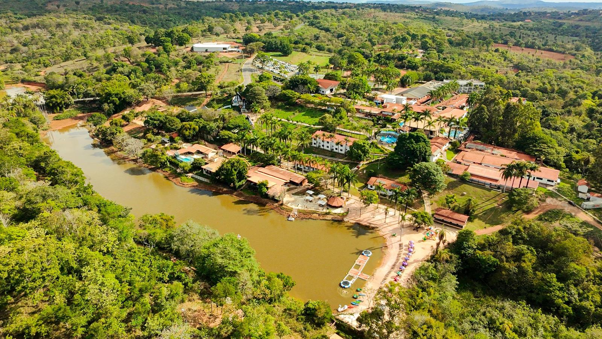
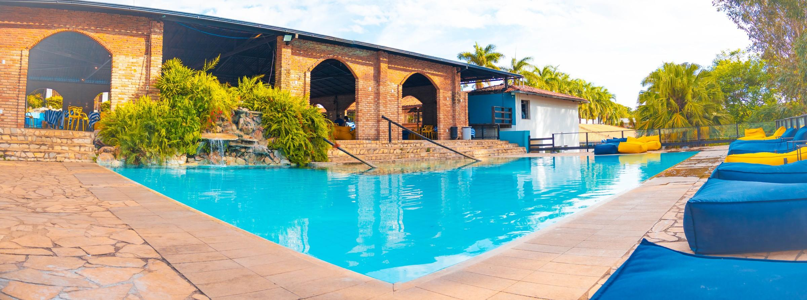
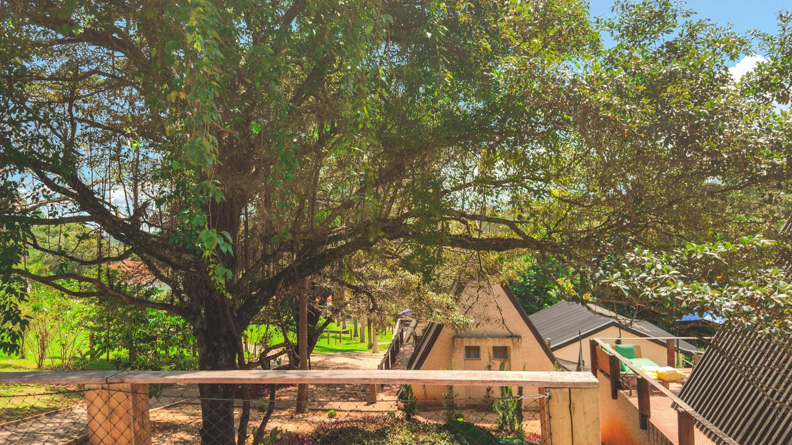
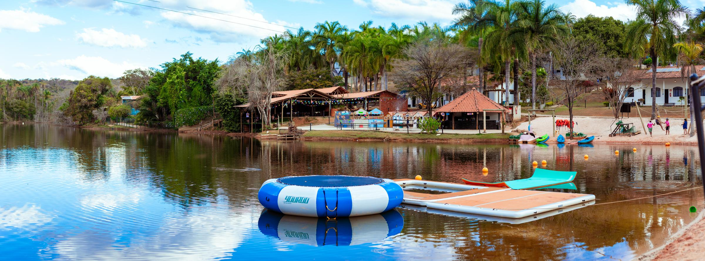

Tem um baú no resort
E ninguém sabe o que tem dentro. Ainda.
Toda noite, quando o Village apaga as luzes, o Bê sai atrás das folhas douradas que caem das palmeiras. Numa dessas noites, seguindo a trilha, ele achou um baú escondido. Trancado. Brilhando pela fechadura.
Desde então o baú balança sozinho de vez em quando, como se tivesse pressa. A gente sabe a data em que ele abre: 27 de novembro, à meia-noite. O que tem dentro, só quem estiver lá vai ver primeiro.
Quem tem a chave entra primeiro.

Como funciona
Três passos. Nada para pagar, nada para sortear.
Pegue sua chave
A partir de 02/11, entre na lista com WhatsApp ou e-mail. Você recebe uma chave com número, da série da semana.
Siga as pistas
A história continua nos dias 06, 13 e 20/11. De 20 a 26/11 chega um número da senha do cofre por dia.
Entre primeiro
À 00h de 27/11 o baú abre. Quem tem a chave fica sabendo antes e entra antes de todo mundo.
As séries da chave
Cada semana abre uma série. Quando ela fecha, não volta mais.
A Chave
A lista abre em 02/11. Volte nesse dia para pegar uma chave da Série Bronze, a primeira.
No resort
Para quem está hospedado no Village.
O bilhete
Procure o bilhete e o quadro do Bê na recepção. Aponte a câmera e veja o segredo começar.
As estações
A partir de 06/11, folhas douradas aparecem pelo resort. Cada uma guarda um pedaço da história.



O baú abre em
Perguntas
É sorteio?
Não. Não tem sorteio, prêmio nem concurso. A chave é o seu lugar na lista: com ela, você fica sabendo antes e entra antes quando o baú abrir.
Quanto custa?
Nada. Pegar a chave é gratuito.
Quem pode participar?
Maiores de 18 anos. Se for em família, um adulto pega a chave por todos.
O que vocês fazem com meus dados?
Usamos seu nome e o contato que você escolheu só para mandar as pistas e o aviso do baú, e só pelos canais em que você marcou o aceite. Para sair, responda SAIR no WhatsApp ou clique em descadastrar no e-mail. Detalhes na política de privacidade.
Perdi o número da minha chave
Ele fica salvo neste aparelho, aqui na página. Também vai na primeira mensagem que você recebe.
O que tem dentro do baú?
Segredo. Ele abre à 00h de 27/11.